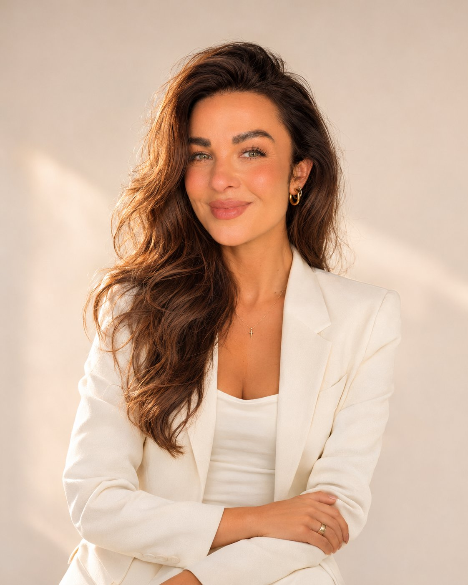

Über mich.
Olga Bertram, geb. Hergert – für die meisten einfach Oli. Seit 2017 selbstständig, seit 2023 mit eigener Holdingstruktur. Zahlen, Struktur und Umsetzung sind mein Handwerk – im Unternehmen, im Hörsaal und an der Seite von Geschäftsführungen.
Gründerin & Geschäftsführerin
Ich führe die make it done GmbH in Erkelenz. Wir begleiten Unternehmen bei Finanzen und Struktur und unterstützen Geschäftsführungen als C-Level-Support. Meine Unternehmen halte ich über meine Holding, die FYA GmbH.
Seit 2010 im Hörsaal
Ich unterrichte Rechnungswesen und Steuerrecht – an der Hochschule Niederrhein, der Rheinischen Hochschule Köln und bei WBS Training.
- Steuern
- Kosten- und Leistungsrechnung
- Finanzbuchhaltung
- Jahresabschluss
- Finanzmathematik
- Wissenschaftliches Arbeiten
- DATEV
In Omsk geboren, im Rheinland zu Hause. Zweifach-Mama + – und Tänzerin: 2026 WM-Bronze in Kielce mit der Hip-Hop-Formation Adults 2 von The Crew Erkelenz.
Beruf & Studium
- Kaufmännische Ausbildung (Kauffrau für Bürokommunikation)
- Ausbilderin nach AEVO (AdA-Schein)
- Studium Steuern und Wirtschaftsprüfung (B.A. Taxation and Auditing), Hochschule Niederrhein
- DATEV-zertifiziert
Coaching & Gesundheit
- Zertifizierte Mentalcoach
- Ernährungsberaterin
- Entspannungstrainerin
- Fitnesstrainerin